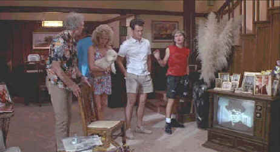

Universal/1989/102m/WS 2.35
 |
Mr. Rogers would be appalled©Universal |
What happens when a reclusive family moves into the
rundown house next door? It gets the neighbors to talking, that's what, and the topic of
conversation is what's going on at night when powerful lights emanating from the basement
shake up the foundations of this plastic suburban neighborhood. Before you can say boo the
trio of nosiest neighbors has suffered through a bee attack, have broken into a missing
neighbor's home and have even made the colossal effort of paying a social call on the
Klopeks who have been the object of their conversations since their arrival a month ago.
Tom Hanks plays burned out Ray Peterson home from work for a week
of slovenly down time while Carrie Fisher playing his wife can't convince him to vacation
at their lakeside cabin. Bruce Dern is madman ex-soldier Mark Rumsfield , ready to aid and
abet any attack on the Klopek household with an array of Army assault equipment and Rick
Ducommun plays Art Weingartner who will eat his way through any situation.
From a one note script by Dana Olsen, Joe Dante's direction plods
along with no imagination nor originality. The actors seem in the dark in the daylight and
fully exposed at night. They just don't a center of humor to work with and Dante can't
seem to offer them any assistance. This is one neighborhood that no one will want to
visit.
The DVD performs ably in every respect. Sharp images show little
evidence of edge enhancement and color saturation is uniformly strong and accurate. Shadow
detail is well balanced and contrast provides deep blacks and pure blue skies without
crushing information. The organ chords from the Goldsmith score reverberate with gleeful
menace in the surrounds on the Dolby Digital 2-channel surround recording. The explosions
are visually and sonically on target. An alternate ending is also included.